Lönar
Invoicing that works before you sign up. Make an invoice, send it, and always know who still owes you.
Lönar
Invoicing that works before you sign up
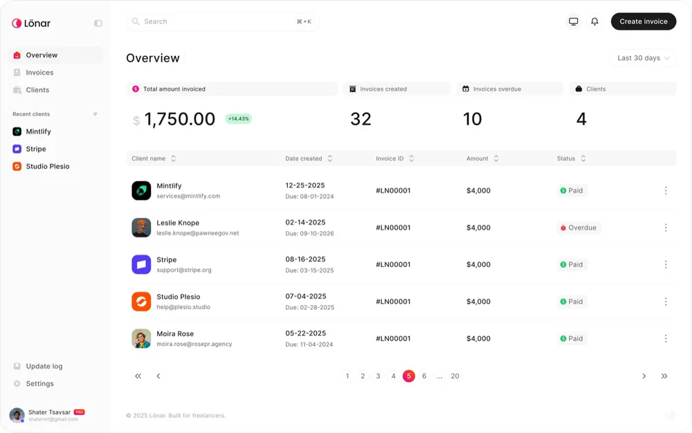
Intro
Most invoice tools make you pick between simple and useful. The simple ones don't track anything, and the useful ones bury you in onboarding before you can send a single invoice.
I wanted to open a page, make an invoice, send it and track the payment, with nothing in the way. So the account is optional. The generator works before you sign up, and signing up only adds memory: your clients, your history, and who still owes you. Making the account optional instead of a gate was the whole design problem.
My role
I co-founded Lönar and led the product. That meant the research, the flows, the design system and the UI, the brand and the social accounts, and some of the frontend too.
Solution
You land on the platform and the invoice generator is the first thing you see. Client details can be saved, so you're not typing the same address in every time.
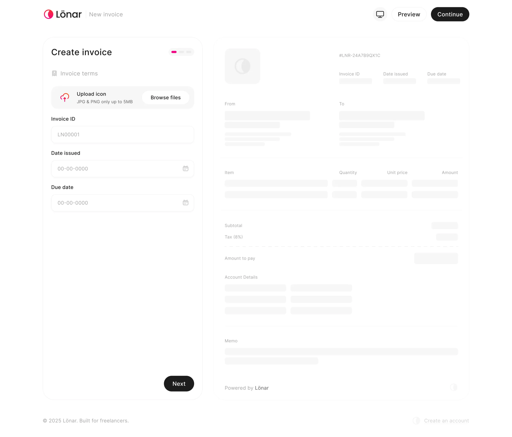
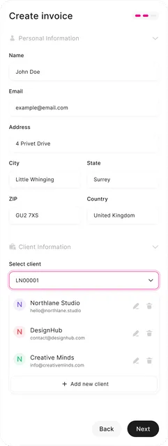
From there the invoice goes straight to the client by email.
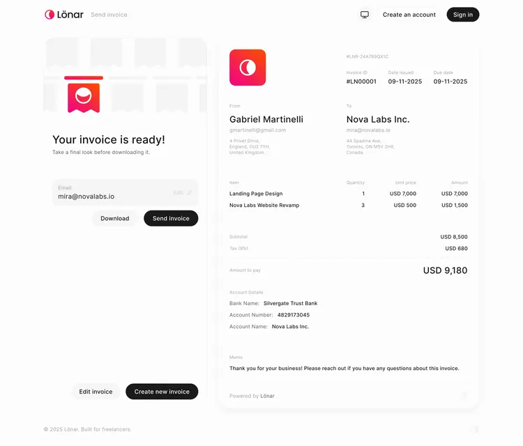
That's where creating ends and the dashboard starts.
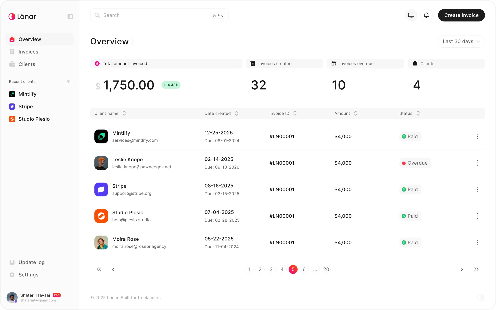
It shows what you've earned across all time and the last 30, 60 and 90 days, plus how many clients and invoices you have. It gives the platform a memory beyond the last thing you sent.
Invoices are also grouped by client, so you can see everything attached to one person at once. During research, someone running a clothing business told me he needed to know how much each client had spent in total. That became the core of how the client view works.
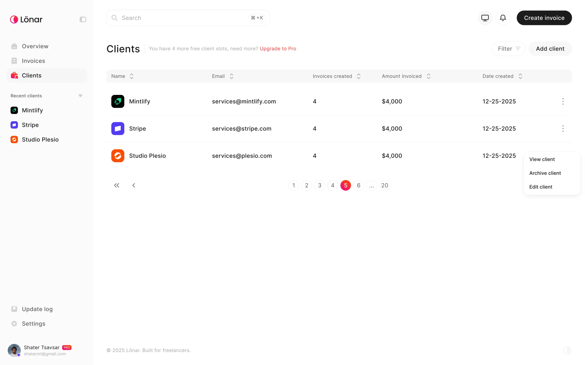
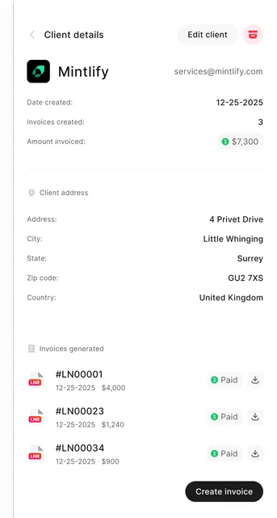
Most of the features came from conversations exactly like that one.
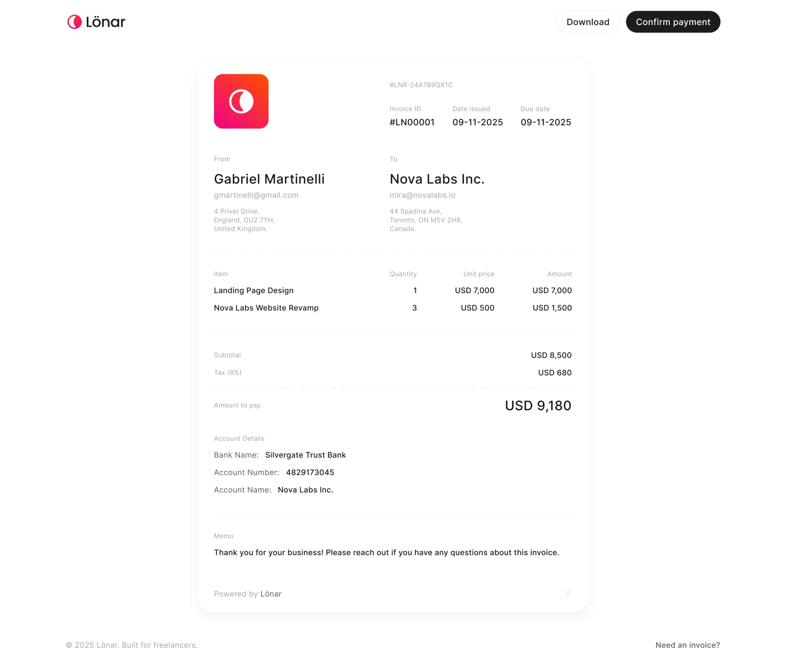
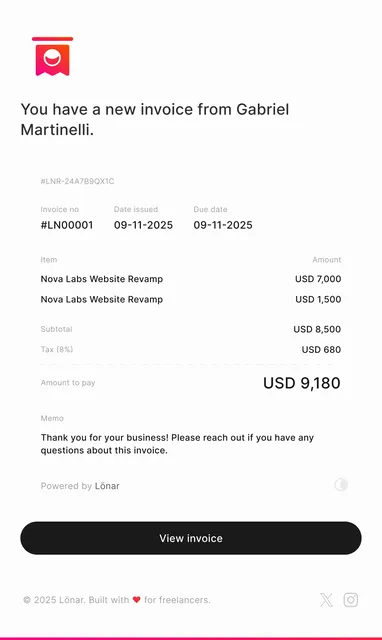
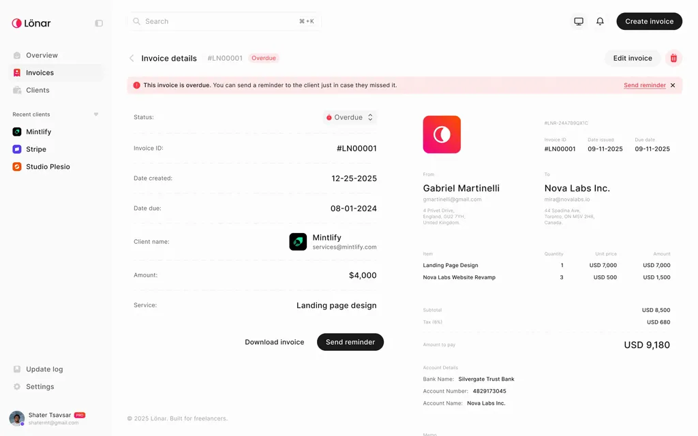
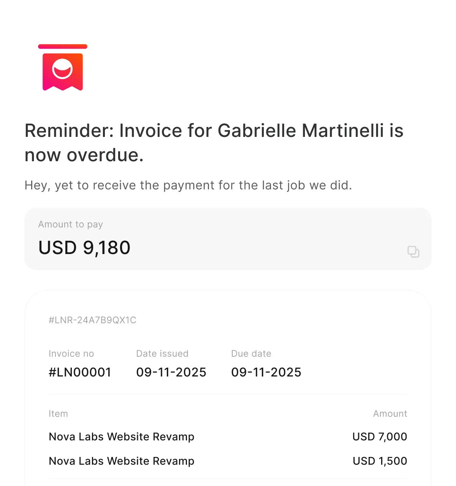
Payment tracking works by status. Payments don't go through the platform yet, so for now it relies on the client confirming by email, and Lönar sends reminders automatically once a due date passes. It's a lightweight version of something we plan to own properly.
Process
Questionnaires came first, and they confirmed what I suspected: people were stitching several tools together to do something that should take one.
From that I built a user flow, tested it with potential users and fixed it before touching the UI. A few of my assumptions didn't survive that round.
The generator shipped before the full platform. So by the time I was deep in high-fidelity design, real people were already sending invoices with it, and the revision requests came from them rather than from us guessing.
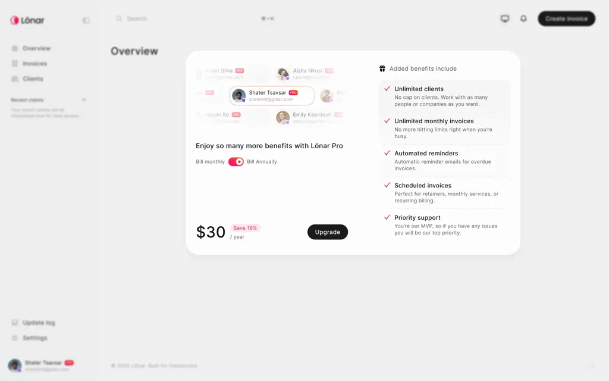
The last phase covered the API, the Pro plan, account management, and downloads and exports: getting the details right once the structure had already proven itself.
Lessons
Shipping the generator first was the right call. Real feedback arrived early, while changing things was still cheap.
It also pulled me further into engineering. When you own a product end to end, the line between design and implementation blurs fast, and I stopped treating that as a problem.
connect
I’m always up for talking to thoughtful people about design systems, interfaces, and the code they turn into. Reach me at shatermt@gmail.com, or find me on X and GitHub.